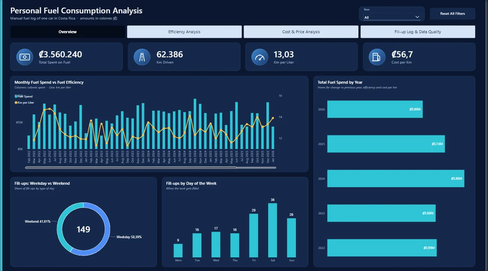

Power BI · end-to-end analysis
Personal Fuel Consumption Analysis
A 4-page Power BI report on almost five years of my own fuel log: 149 fill-ups and 62,386 km. It covers efficiency, cost per km and data quality.
- Power Query layered queries; km driven rebuilt from the odometer with a self-merge and validated row by row.
- Star schema with a DAX date table and 25 explicit measures, including time intelligence and rolling averages.
- Published to the web with a daily scheduled refresh from OneDrive, no gateway needed.
Finding: driving got 32% cheaper per km from 2022 to 2026, mainly because of fuel prices.